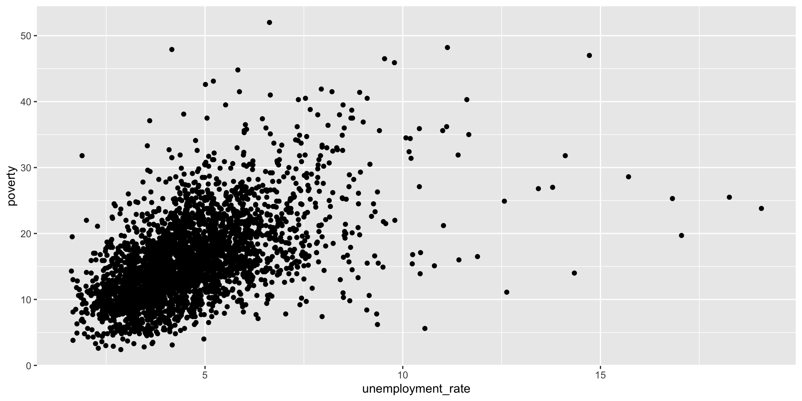
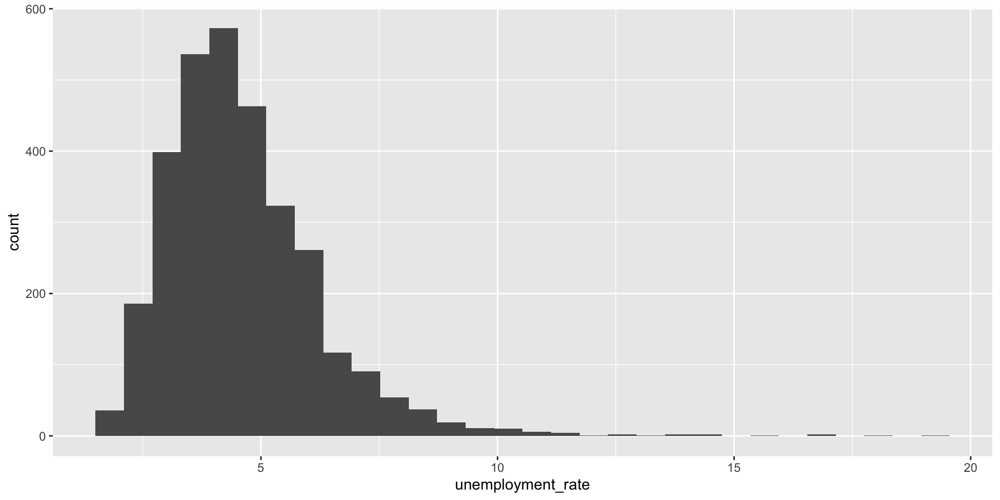
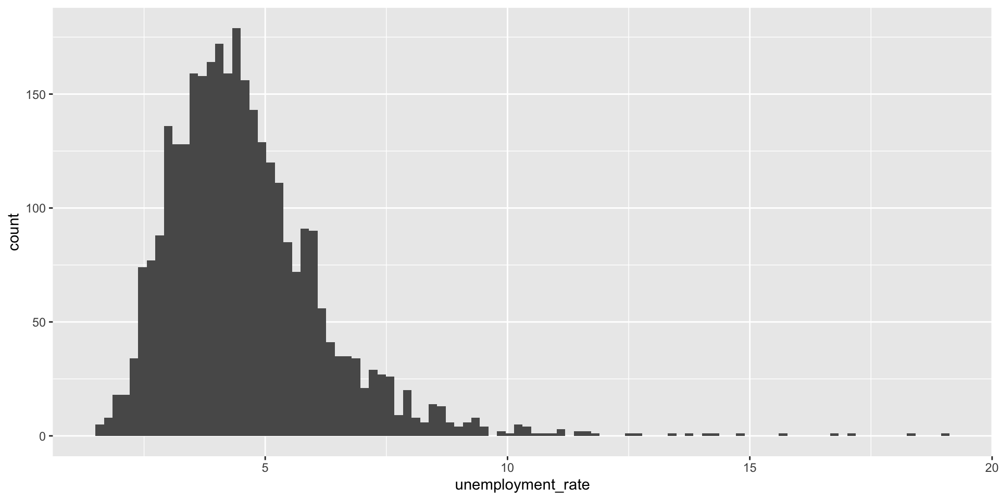
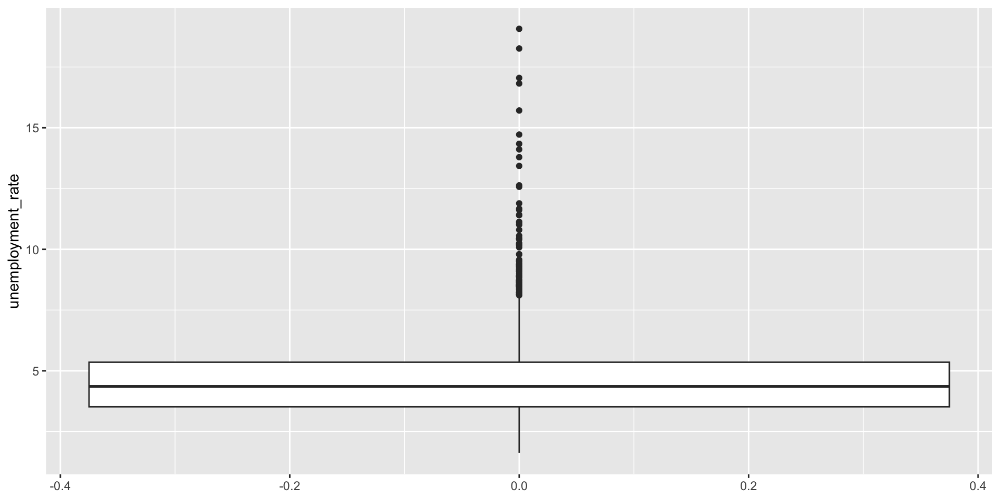

What is descriptive statistics?
- summarize a given data set
- measures of:
- distribution (how data is spread out and how frequently different values occur)
- central tendency (mean, median, mode)
- variability (range, standard deviation, variance, interquartile range – IQR)
The data
We will be using US demographic data for our exploratory analyses.
You can download the csv file and add it to your RStudio (or Posit Cloud) project.
Create a new R script file and save it as county-data-analysis.R and load the tidyverse package and the data.
library(tidyverse)
county <- read_csv("data/county.csv")
Review of steps
Let’s practice what we have covered so far, which is the following:
- Summarize the data by calculating the mean of the numeric variables
- Create a scatter plot of two numeric variables
county |>
summarize(mean_poverty = mean(poverty, na.rm = TRUE))
Scatterplot
county |>
ggplot(aes(y = poverty, x = unemployment_rate)) +
geom_point()

Distribution
How data is spread out and how frequently different values occur.
Histogram: the frequency distribution of a continuous variable
county |>
ggplot(aes(x = unemployment_rate)) +
geom_histogram()

Histogram
- Provides a view of the data density
- Describes the sahpe of the data distribution
- Higher bars represent where what values are more common
Histogram
- x-axis shows the data ranges (bins)
- y-axis shows the frequency (count or percentage)
- bins: intervals the data range is divided into, each bin displays one bar
- the height of each bar shows how many data points fall within that bin
- the shape shows the distribution pattern (normal, skewed, bimodal, etc.)
- the width of the bins can be manipulated
Histogram
The defaul number of bins for geom_histogram() is 30, but we can change that.
county |>
ggplot(aes(x = unemployment_rate)) +
geom_histogram(bins = 100)
This distribution is skewed to the right, with a long tail to the right
Positive Skew
Or right-skewed
- Most values cluster on the left
- Some high values pull the mean up
- The mean is greater than the median
county |>
summarize(mean_unemployment = mean(unemployment_rate, na.rm = TRUE),
median_unemployment = median(unemployment_rate, na.rm = TRUE))
Mean
The mean is the sum of the terms divided by the number of terms.
Here’s the formula for the sample (the observations) mean:
\(\bar{x} = \frac{x_1 + x_2 ... + x_n}{n}\)
where \(x_1, x_2, ..., x_n\) represent the observed values
Or:
\(\bar{x } = \frac{ \sum_{i=1}^n x_i}{n}\)
Measures of Central Tendency
Mode
- value(s) that appears most frequently in the data
It’s the only measure of central tendency that can be used with categorical data.
A dataset can have:
- One mode (unimodal)
- Two modes (bimodal)
- More than two modes (multimodal)
- No mode (if all values occur exactly once)
Measures of Central Tendency
county |>
count(unemployment_rate, sort = TRUE)
Variability – range
- simplest measure of variability
- the difference between the largest and smallest values
- sensitive to outliers (uses two values)
- nothing about how values are distributed between the min and max
county |>
summarize(min_unemployment = min(unemployment_rate, na.rm = TRUE),
max_unemployment = max(unemployment_rate, na.rm = TRUE)) |>
mutate(range_unemployment = max_unemployment - min_unemployment)
Variability – variance
- average squared distances from observations to the mean
\(s^2 = \frac{\sum_{i=1}^n (x_i - \bar{x})^2}{n-1}\)
Why do we use the squared deviation in the calculation of variance?
- To get rid of negative values so that observations equally distant from the mean are weighed equally
- To weigh larger deviations more heavily
Variability – standard deviation
- square root of the variance
- interpreted as the average distance of each data point from sample mean
- the degree of dispersion of the data points relative to its mean
\(s = \sqrt{s^2}\)
Or:
\(s = \sqrt{ \frac{\sum_{i=1}^n (x_i - \bar{x})^2}{n-1}}\)
Variability – standard deviation
- square root of the variance
- interpreted as the average distance of each data point from sample mean
- the degree of dispersion of the data points relative to its mean
county |>
summarize(sd_unemployment = sd(unemployment_rate, na.rm = TRUE))
Interquartile Range – IQR
- quartiles are the partitioned values that divide the values into 4 equal parts (3 quartiles)
- IQR is difference between the third and the first quartile So, there are
- the first quartile (or 25th percentile) is denoted by \(Q1\) and known as the lower quartile
- the second quartile (or 50th percentile) is denoted by \(Q2\) and known as the median
- the third quartile (or 75th percentile) is denoted by \(Q3\) and known as the upper quartile
Interquartile Range – IQR
- the interquartile range is equal to the upper quartile minus lower quartile
- between \(Q1\) and \(Q2\) is the middle 50% of the data
\(IQR = Q3 - Q1\)
Box plot
- the box represents the middle 50% of the data
- the thick line in the middle is the median
- top box line is \(Q3\)
- bottom box line is \(Q1\)
- whiskers:
- max upper whisker reach = \(Q3 + 1.5 * IQR\)
- max upper whisker reach = \(Q1 - 1.5 * IQR\)
Box plot
county |>
ggplot(aes(y = unemployment_rate)) +
geom_boxplot()

Outliers
- potential outliers are shown in the box plot as dots
- an outlier is an observation that:
- is beyond the maximun reach of the whiskers
- appears extreme, relative to the rest of the data